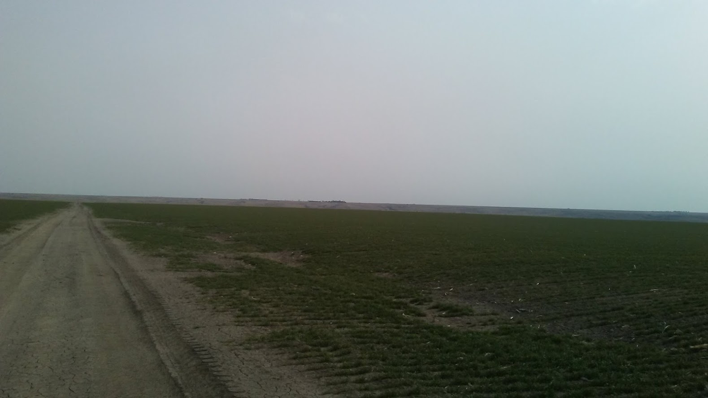
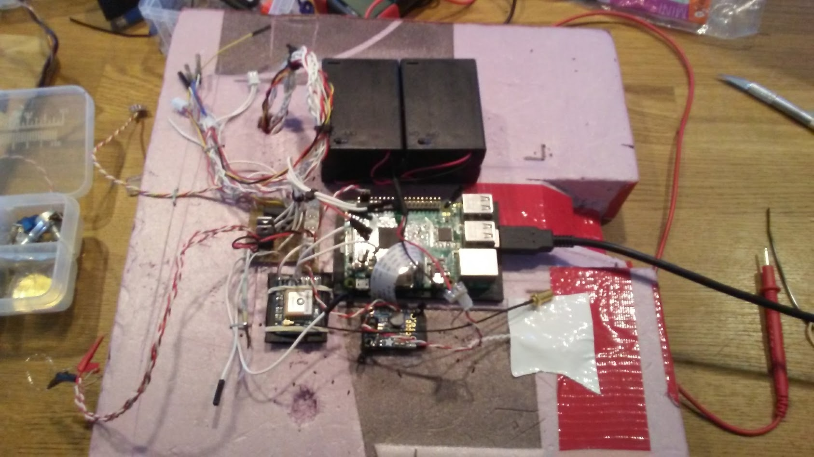
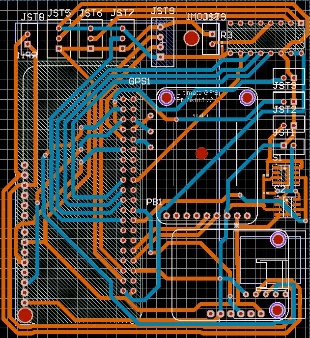
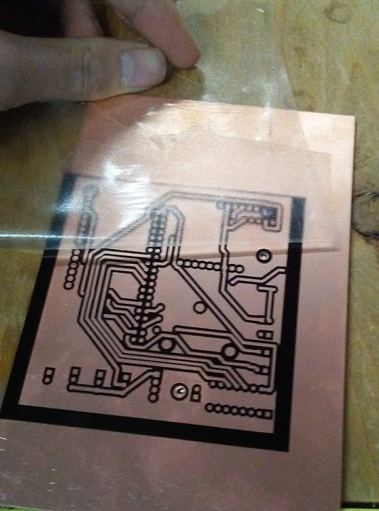
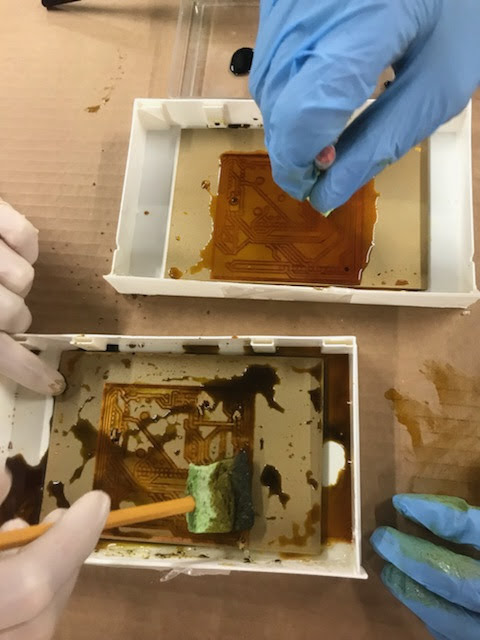
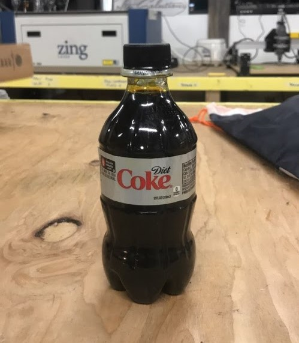
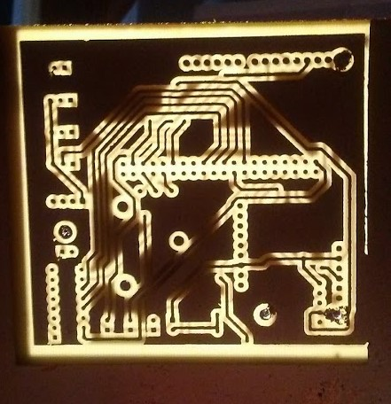
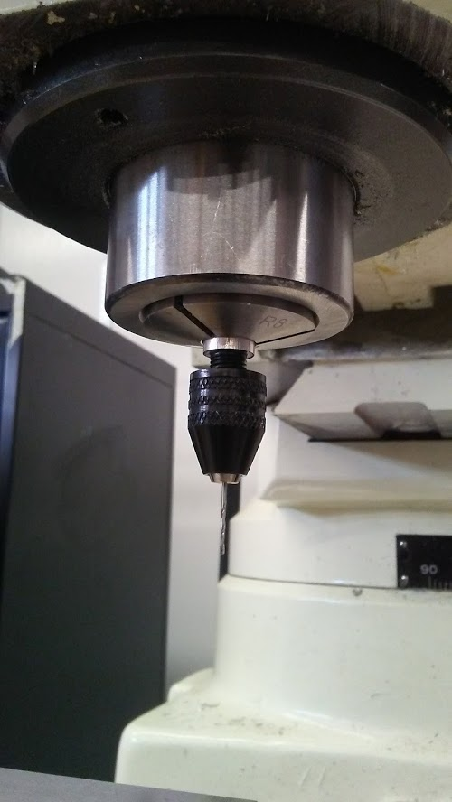

Hans Gaensbauer - A Portfolio
If you're reading this, you spelled my name right! I am a junior at East High
School in Denver Colorado with an interest in science and engineering. Here,
I've outlined all of my most interesting (and best documented) projects from
this year.
High Altitude Balloon: Recovery
4-17-18
We did not recover the balloon.
Four and a half hours after the launch, I succeeded in contacting the recovery
phone on the high altitude balloon, which had traveled 180 nmiles away,
into Nebraska. The next day we left to go retrieve it.
 As it turns out, it is impossible to find coordinates from the Google Find My Phone
website, and after an hour of digging around in the page source, I gave up.
I took a screenshot and created a transparency, which I overlaid onto
Google Maps (above).
As it turns out, it is impossible to find coordinates from the Google Find My Phone
website, and after an hour of digging around in the page source, I gave up.
I took a screenshot and created a transparency, which I overlaid onto
Google Maps (above).
Getting to Nebraska took 4 hours, and we left at noon. When we arrived,
the car got stuck in mud, and after managing to extricate ourselves,
we decided that it would be folly to try to drive, so we set off on foot.
After walking through two miles of open fields and surprisingly hilly terrain,
we found nothing. And that is when the wind came.

With alarming speed, the previously mild wind turned south and accelerated
to 80 mph, forcing us to abandon our search and turn back. After a long
trudge, being buffeted by flying corn stalks and dirt clouds, we made it
back just before it started to rain.
High Altitude Balloon: The Launch
4-16-18
After all that work, the balloon launch did not go to plan.

About two weeks before the launch, we decided to scrap the printed circuit
board, due to the lack of progress on fitting rivets. We had to fit each
rivet manually, then drill through it again to make room for the pins.
While it was a relief to finally be making progress, there were too many
wires and the circuit was a rat's nest.
On the day of the launch, we did the helium calculations incorrectly,
having assumed a payload weight that was too low. When we had completed
the launch countdown, the balloon did not float away, but instead hit the
ground with a heart-sinking thud (in front of CBS and channel 4).
I will say that I was inspired by the disaster control that followed. I redid
the helium calculations by hand, and we got more helium from party city (we
found that we were missing about 30 cubic feet of helium).
Before the second launch, our programmer told us that the electronics were
not functioning, and we decided to cut them out. The gopro and a backup phone
would stay, but everything else, all of the circutry that we had designed
and constructed over the last six months, had to go. I cut out everything
but the raspberry pi camera, and we launched the balloon.
The media coverage of the launch can be found here.
High Altitude Balloon: New Design
3-9-18
I have redesigned the PCB for the balloon!

We did not remove the ADC, instead, we will redesign the breakouts for
the MQ sensors using protoboard. We added a JST connector for the PM 2.5
sensor, and widened the distance between the pads and the polygon pour.
The other important change is the addition of a GSM module from DIYmall.
This will allow the balloon to communicate with SMS while it is at low
altitude without having to wait for Iridium's servers. More importantly,
the GSM module has a much higher communication speed, so we can pull
pictures from the Raspberry Pi on the way down. If we lose the balloon,
we will still be able to collect all of its data.
High Altitude Balloon: A New PCB!
3-15-18
The PCB has been remade! Using the same process, we created a new version
of the HAALO PCB using the design above. This time, armed with more experience
and a new set of drill bits, we were careful to avoid the same mistakes we
made last time.

Here is the new PCB with the vinyl resist. I was faster removing it
after spray painting the board, so there were fewer problems with the paint coming
with the vinyl.

I didn't have any acid brushes (and I didn't feel like going to the hardware store) so
I cut up a sponge and hot glued the pieces to a few pencils. We had two
PCBs and three people (myself and two absolutely brilliant exchange students from
Italy and Poland), so we took turns emptying the acid while the other two
scrubbed, and we were done within an hour.

When we finished, we were left with one bottle of used PCB etchant. To
make etching faster, we had to use more acid (as rate is a function of
concentration, not amount). We neutralized the acid and added aluminum
to create aluminum chloride, which can be disposed of legally.


This time, we drilled the through-holes with a mill at my school, a piece of
equipment which I'm convinced cost more than the building it's housed in. The drill
bit was way too small for the collet, so we used an equally fancy engine mill
to turn down my poor micro drill bit collet so that it would fit in the
5/32" collet in the mill, and, believe it or not, it worked!